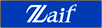
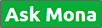

モナーコインとは？
モナーコイン（Monacoin）は、日本の巨大掲示板サイト「2ちゃんねる」ソフトウェア板でわたなべ氏によって、2014年1月1日に開発された日本初の暗号通貨です。
ビットコインの後継と目されるライトコインをベースとして開発されました。
現在世界中で流通しているビットコイン以外のほとんどの暗号通貨は、通貨取引を除くと実際に利用できる決済やサービスはほとんどありませんが、モナーコインは日本初ということや出自が「2ちゃんねる」ということもあり、お絵かき系同人誌や投銭ができる掲示板などで積極的に利用され、独自なコミュニティを形成しています。
以下に代表的なサービスを紹介します。
■取引所：手数料ゼロのビットコイン・モナコイン取引所・販売所 - Zaif
 https://zaif.jp/日本一のモナコイン取引量を誇るビットコイン・モナコイン取引所。
■投銭掲示板：Ask Mona
 http://askmona.org/おそらくモナーコイン・コミュニティの中で一番活発な掲示板。
■ポータルサイト：Monappy - Monacoinポータル＆ウォレット
https://monappy.jp/モナーコインで買い物ができる「MonappyPayments」などを備えたポータルサイト。
■取引所：bitbank - ビットコイン・仮想通貨取引所
https://bitbank.cc/シンプルで軽量、しかも高い機能性を備えた
スマートなビットコイン・仮想通貨取引所